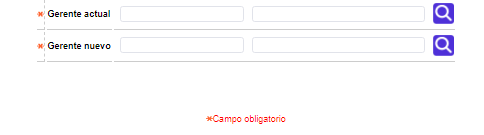

Cambio masivo gerente de cuenta
Mediante esta función la entidad realiza el proceso de cambio masivo de los funcionarios que tienen perfil de gerentes de cuenta, puesto que un funcionario determinado podría cesar sus actividades dentro de la entidad, cambiar de cargo o simplemente por política de la entidad se decide el cambio de dicho funcionario.
El formulario cuenta con dos campos y el botón para realizar el cambio masivo.

Gerente actual |
Este campo posee una lista de valores poblada a través de la opción funcionarios de las tablas de la entidad financiera del núcleo, a partir de la cual se selecciona el nombre del gerente a ser removido o sobre el que se efectuará el cambio. |
Gerente nuevo |
A través de la lista de valores que provee el campo poblada en la opción funcionarios de las tablas de la entidad financiera del núcleo, se selecciona el nombre del nuevo gerente a quien le son asignados los clientes que eran atendidos por el funcionario arriba señalado. |
Ejecuta la acción del cambio masivo de gerente. |